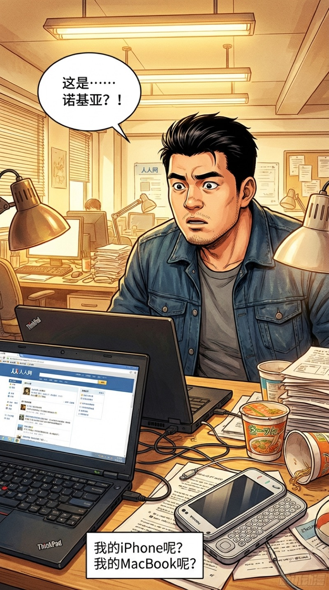
3/4侧面 · 中景 · 出租屋简陋办公桌
我猛地抬起头，脖子酸得要命。面前的桌上……一台诺基亚N97？
等等。我的MacBook呢？我的iPhone呢？
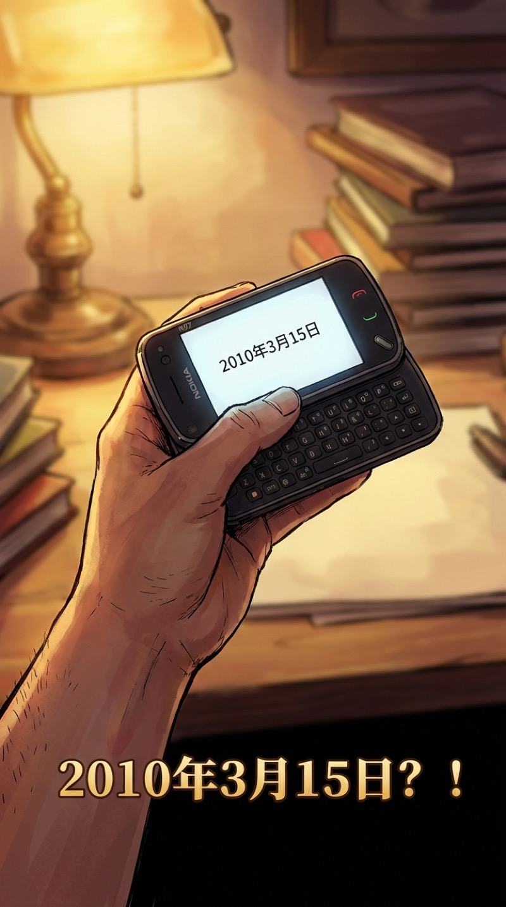
屏幕上的日期清清楚楚——2010年3月15日。
2010？不可能……我刚才还在调GPT-5的接口……
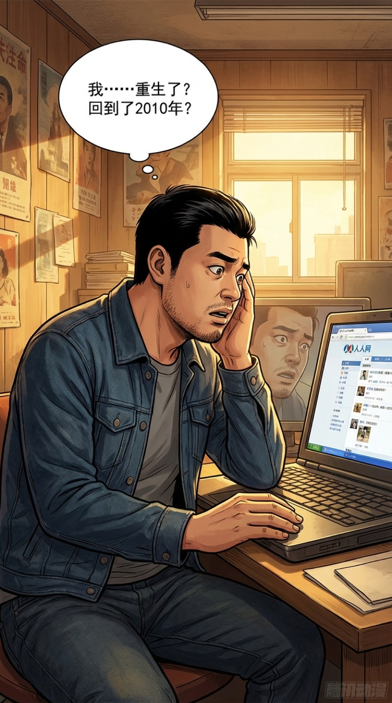
笔记本上打开的是人人网。那个我大学时天天刷的人人网。
我用颤抖的手摸了摸自己的脸——没有眼袋，没有42岁的疲惫。
我……重生了？
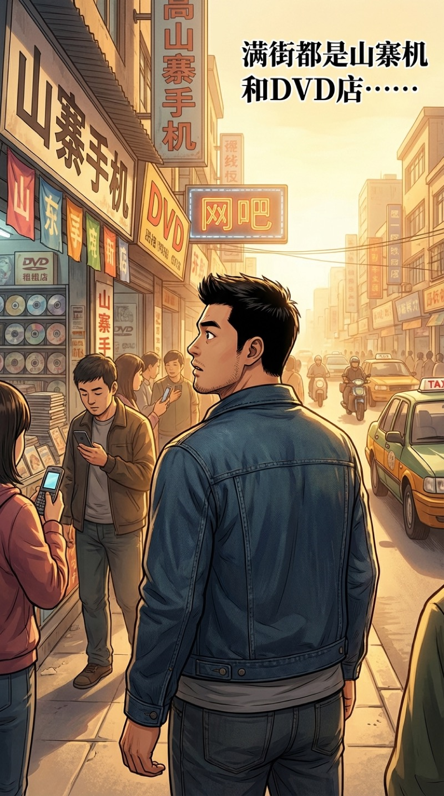
我冲出出租屋，满街都是山寨机广告。DVD出租店。网吧门口坐着一排抽烟的少年。
这个味道……这就是2010年的空气。
路过报刊亭，一张报纸的标题让我停下了脚步：
"苹果将于6月发布iPhone 4——乔布斯：这将改变一切"
改变一切？老乔，你说得太对了。但你不知道，16年后AI才是真正改变一切的东西。
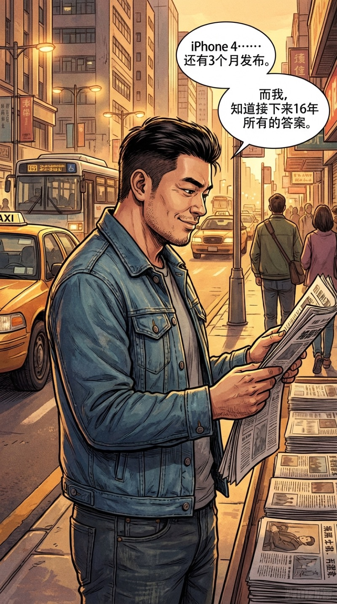
我站在报刊亭前，嘴角忍不住上扬。
iPhone 4还有3个月发布。微信要到明年才出现。抖音？那是6年后的事。而我，知道接下来16年所有的答案。
这次，我要重走一遍。但这次，我不会再犯同样的错。
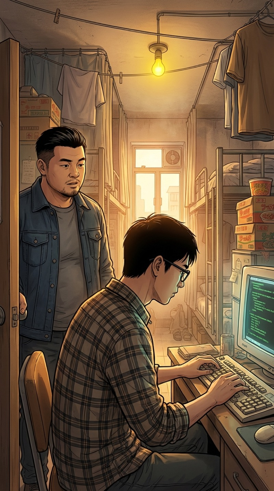
回到出租屋，李明辉还在埋头敲代码。那台散发着诡异嗡鸣的台式机，显示器比我脑袋还大。
李明辉——我的大学室友，未来的CTO。只不过现在他还不知道自己的命运。
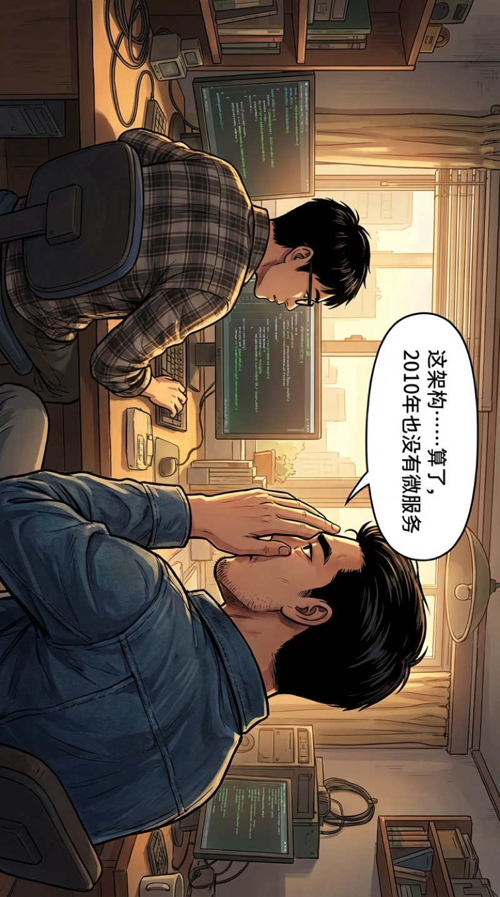
我探过头去看他的代码，差点没忍住——
"这架构……算了，2010年也没有微服务。"
得了，这年头连Maven都不一定普及，跟他说什么Kubernetes。
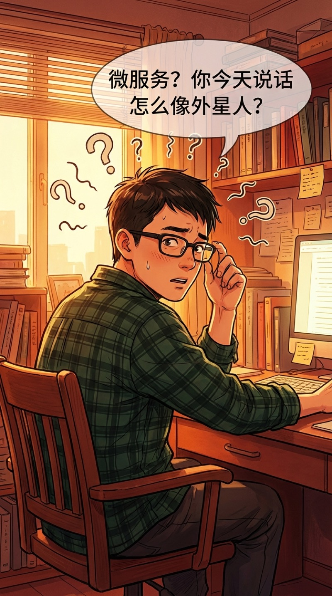
李明辉推了推黑框眼镜："微服务？你今天说话怎么像外星人？你是不是通宵通傻了？"
我赶紧闭嘴。在这个年代，说多了会被送去做精神检测的。
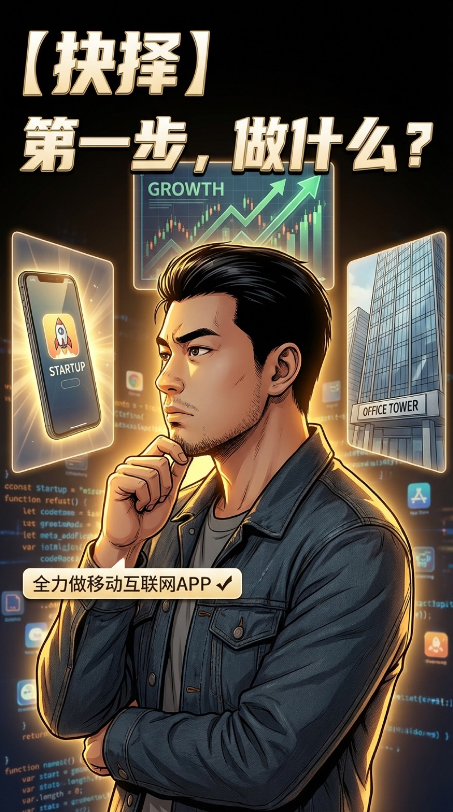
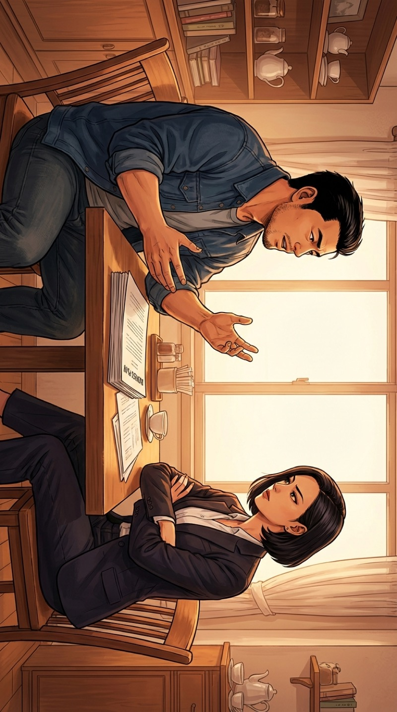
我花了三天写了一份BP——移动社交平台。在2010年，这个概念超前了整整两年。
约到了一个投资人，张薇。圈内传说最毒辣的眼光，最薄的耐心。
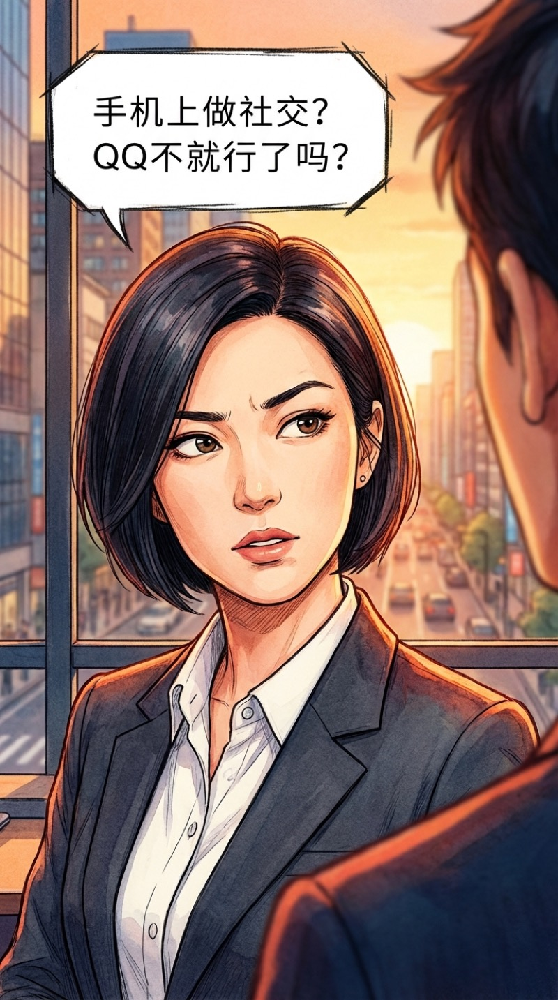
张薇翘着二郎腿，挑了挑眉："手机上做社交？QQ不就行了吗？你搞这个有什么意义？"
姐，两年后你投的这个赛道就值十个亿了。但我不能说。
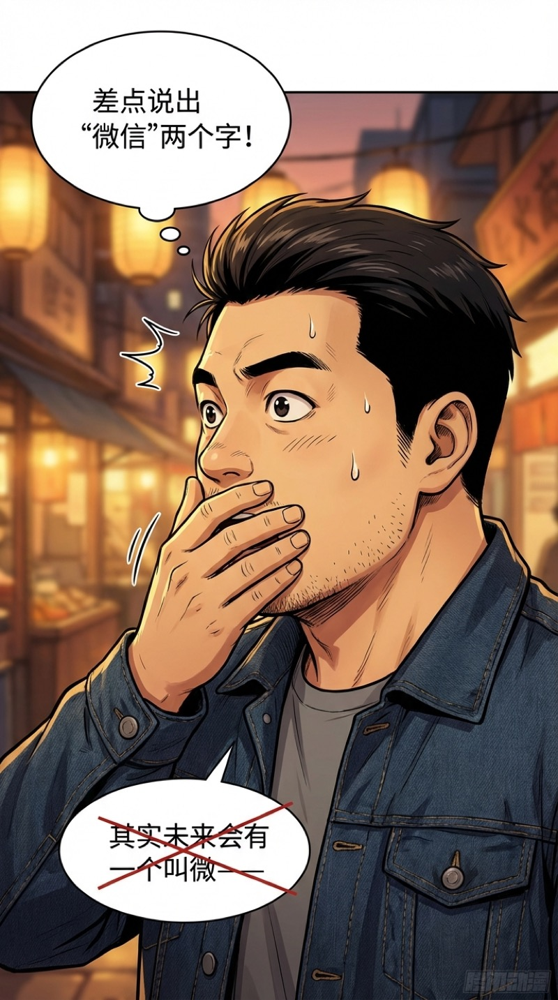
我张嘴差点说出来："其实未来会有一个叫微——"
话到嘴边硬生生咽了回去，手捂住了自己的嘴。
我差点把"微信"两个字说出来了！冷静！冷静！
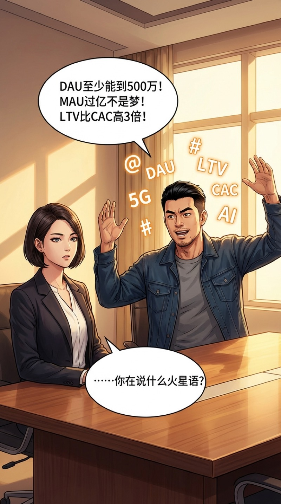
"DAU至少能到500万！MAU过亿不是梦！LTV比CAC高3倍！"
我说得激情澎湃。
张薇一脸空白："……你在说什么火星语？"
糟了，2010年还没有这些缩写。我看起来像个精神病人。
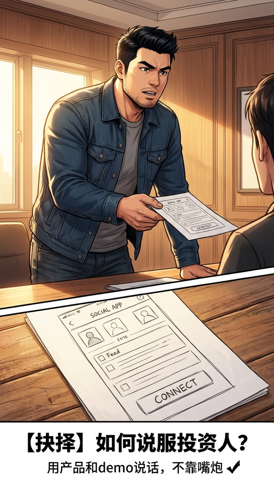
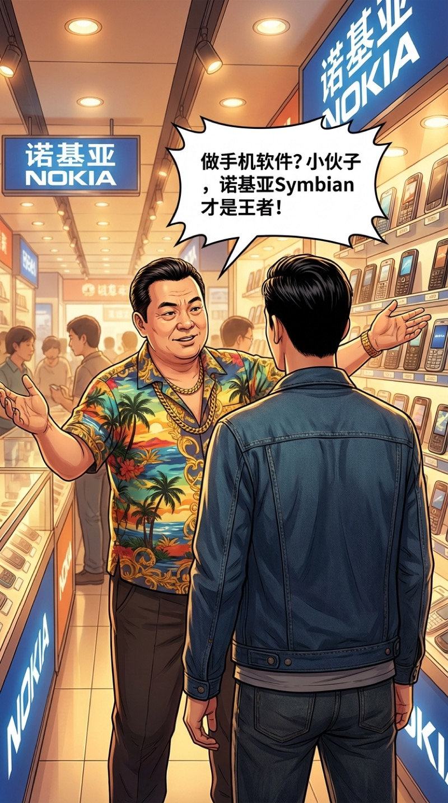
路过中关村，诺基亚代理商王老板拦住了我。金链子在日光灯下闪闪发亮。
"朱江！你小子做手机软件？诺基亚Symbian才是王者！苹果那破玩意在中国谁买？"
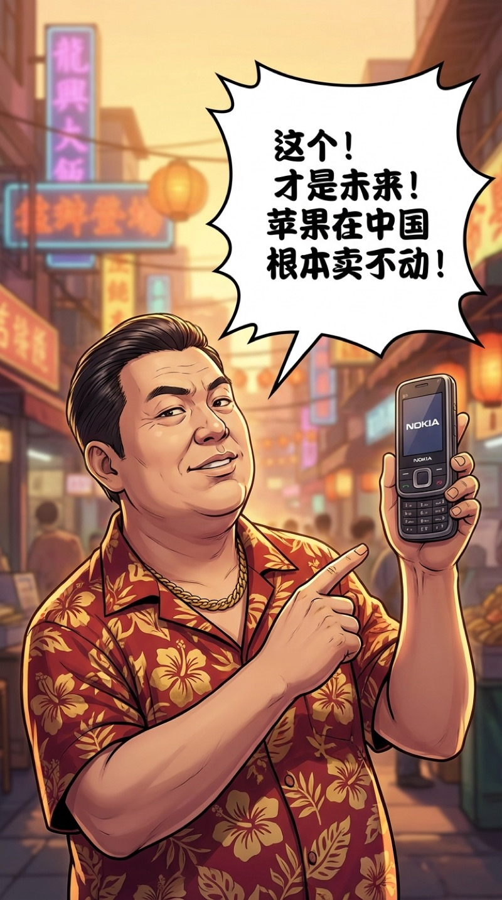
王老板举着Nokia N97，像举着传国玉玺一样神圣。
"这个！才是未来！全键盘！塞班系统！苹果连个键盘都没有，怎么跟我打？"
哥们，你手里那玩意三年后只能当板砖用了。
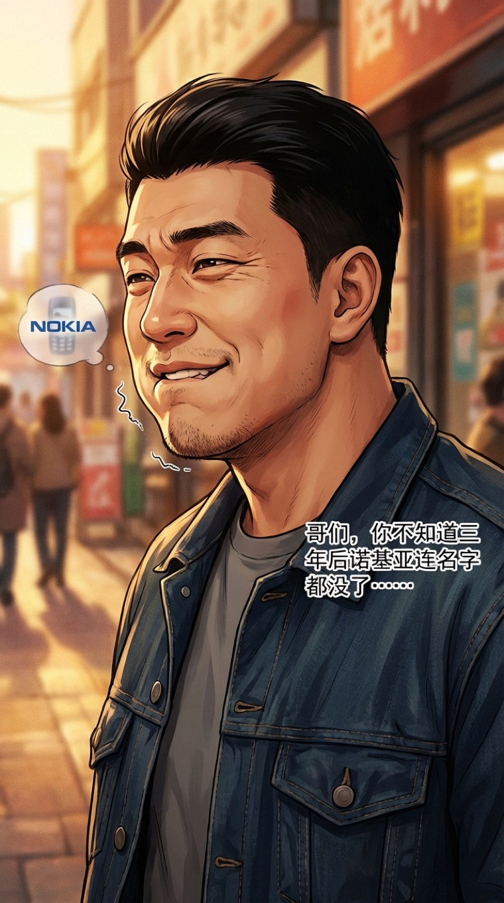
我咬着嘴唇，脸上的肌肉控制不住地抽搐。
三年后诺基亚被微软收购……五年后连名字都消失了……十年后王老板会在朋友圈卖面膜……
我快要憋出内伤了。
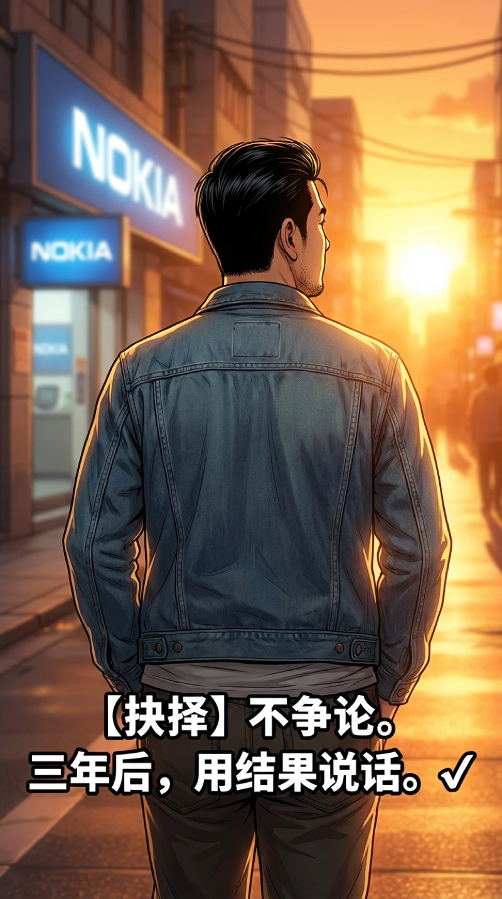
我转身走出诺基亚店，夕阳把影子拉得很长。
不争论。三年后，结果会替我说话。
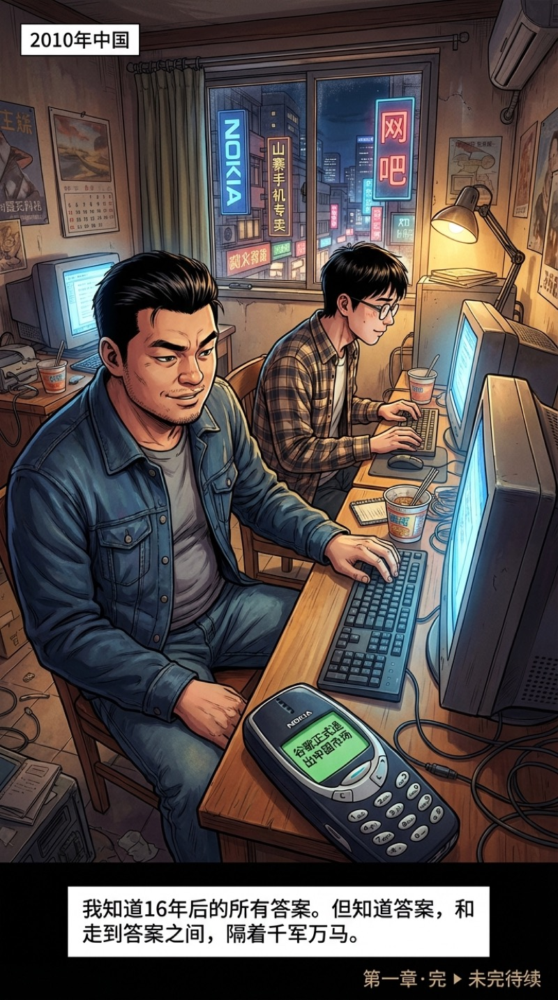
深夜。出租屋里只有键盘声和显示器的微光。
我和李明辉并肩坐在两台破电脑前，开始写第一行代码。
窗外是2010年的中国——满街诺基亚广告，网吧里全是CF和魔兽世界。
手机震了一下，推送了一条新闻：
"谷歌正式退出中国市场"
我看着这条新闻，嘴角微微上扬。
我知道16年后的所有答案。
但知道答案，和走到答案之间，隔着千军万马。
谷歌退出中国——
朱江看着这条新闻在想什么？
他已经开始盘算下一步大棋了……